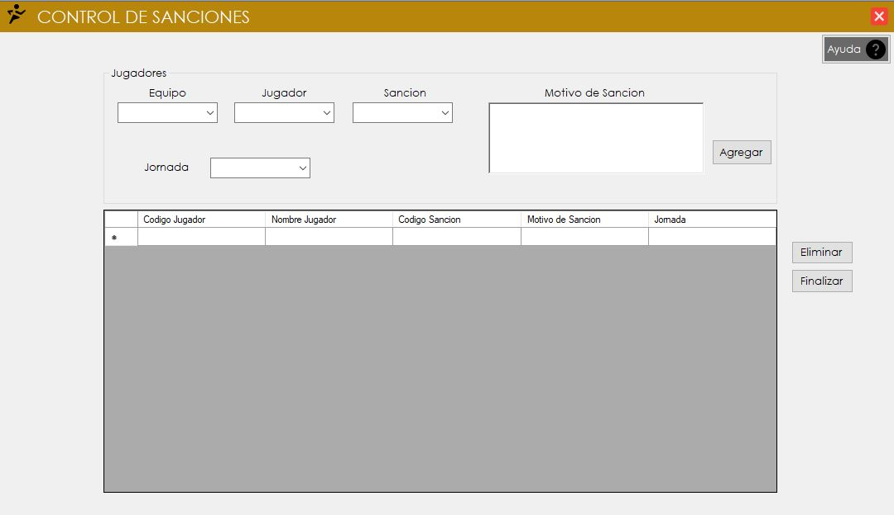
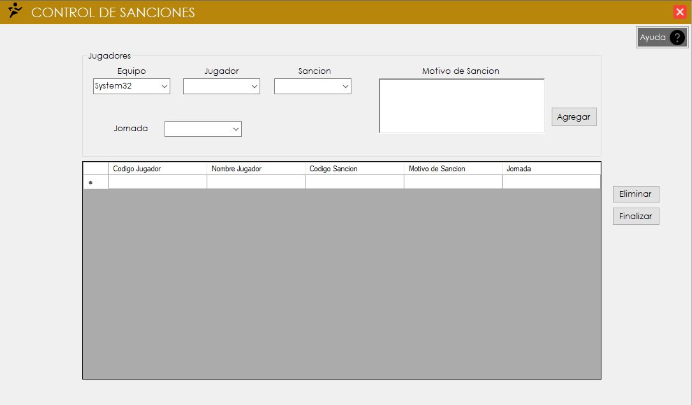
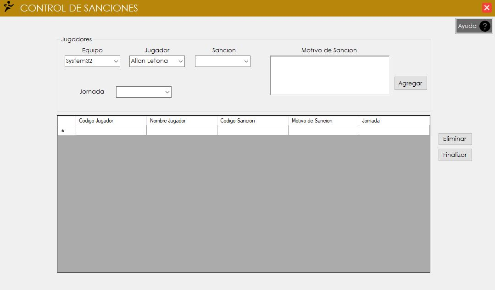
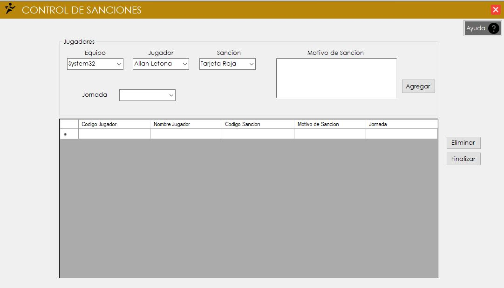
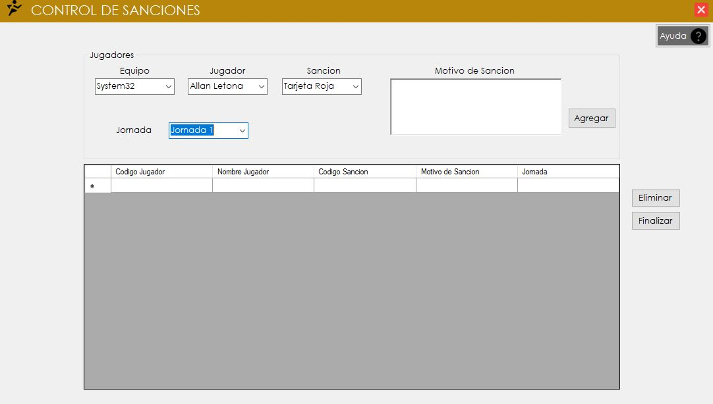
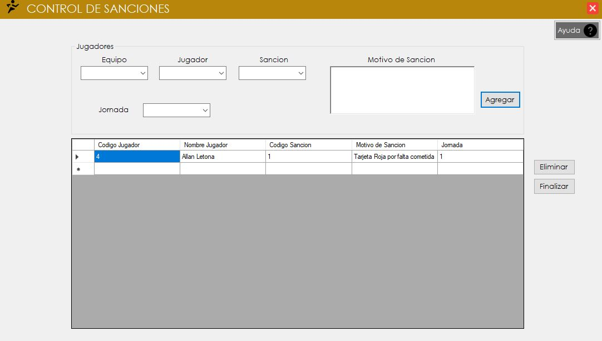
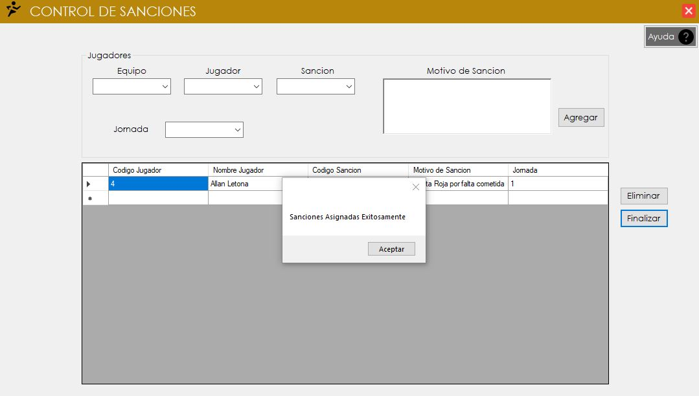

Control de Sanciones
1. Ingresando al formulario del Control de Sanciones :

2. Al ingresar al formulario se selecciona al equipo.

3.Luego se selecciona al Jugador.

4.Se selecciona el tipo de sanción que el jugador cometio.

4. Se selecciona la jornada del torneo.

5. Se agrega una descripcion de la sancion y se da click en el boton de agregar.

5. Por ultimo se da click en el boton de finalizar y la sancion sera registrada y guardada.
